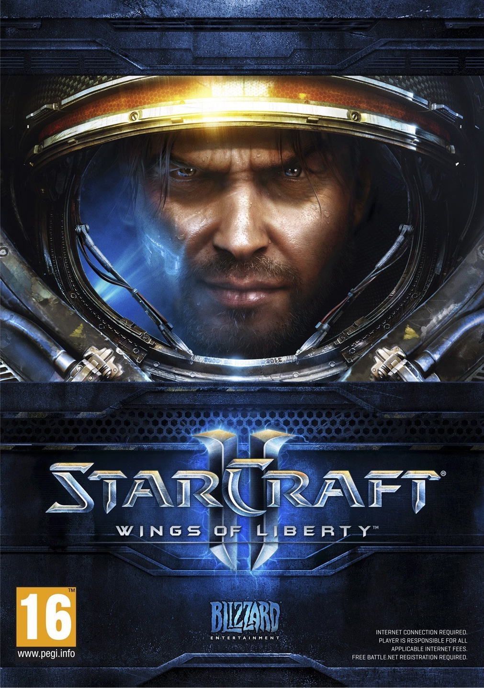

Ahogy minden játéknál megszokhattuk, itt is rendelkezésünkre fognak állni új egységek.
El lehet felejteni a sima "építs bázist meg sereget, aztán irtsd ki az ellenfelet" küldetéseket, nem olyan egyszerű az.
Vigyázat még forró! :)

Minimum konfiguráció:
Operációs rendszer: Windows XP/Windows Vista/Windows 7 (a legfrissebb szerviz pakk kötelező)
CPU: 2,6 GHz-es Pentium IV vagy ezzel megegyező AMD Athlon processzor
VGA: NVIDIA GeForce 6600 GT vagy egy ATI Radeon 9800 PRO, illetve ezeknél jobb
RAM: 1 GB (1,5 GB Vistához és Windows 7-hez)
HDD: 12 GB
Macintosh minimum konfiguráció:
Operációs rendszer: OS X 10.5.8, 10.6.2, vagy ezeknél frissebb
CPU: Intel processzor
VGA: NVIDIA GeForce 8600M GT vagy egy ATI Radeon X1600, illetve ezeknél jobb
RAM: 2 GB
Ajánlott konfiguráció:
Operációs rendszer: Windows Vista/Windows 7
CPU: 2,4 GHz-es kétmagos processzor
VGA: NVIDIA GeForce 8800 GTX vagy egy ATI Radeon HD 3870, illetve ezeknél jobb
RAM: 2 GB
Macintosh ajánlott konfiguráció:
Operációs rendszer: OS X 10.5.8, 10.6.2, vagy ezeknél frissebb
CPU: Intel Core 2 Duo processzor
VGA: NVIDIA GeForce 9600M GT vagy egy ATI Radeon HD 4670, illetve ezeknél jobb
RAM: 4 GB